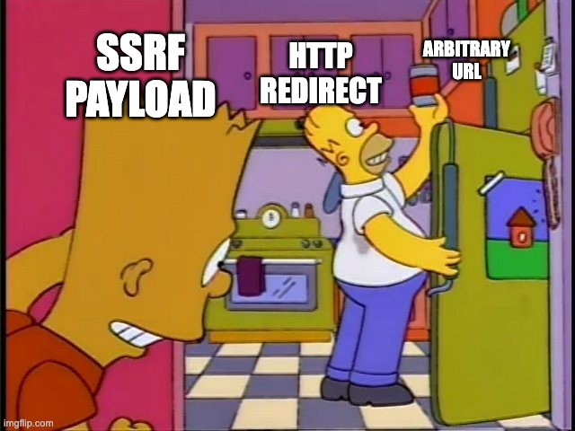
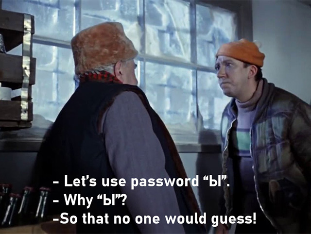

OWASP TOP-10
Vitaliy Boudkin, RSSchool, 2022

10 place
Server-Side Request Forgery (SSRF)
9 place
Security Logging and Monitoring Failures
8 place
Software and Data Integrity Failures
7 place
Identification and Authentication Failures
6 place
Vulnerable and Outdated Components
5 place
Security Misconfiguration
4 place
Insecure Design
3 place
Injection

2 place
Cryptographic Failures
1 place
Broken Access Control
More info here:
https://owasp.org/Top10/